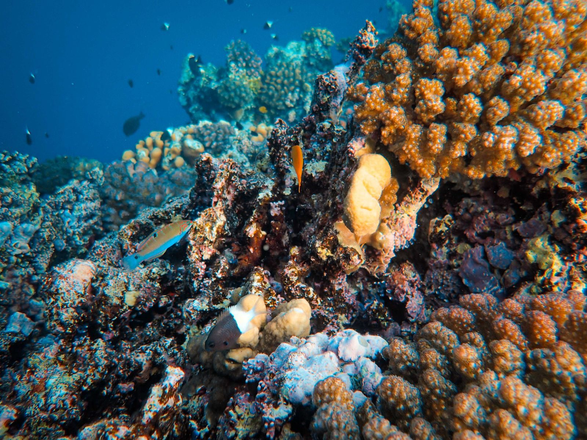

Coral restoration · Nurseries, outplanting, monitoring
Fragments in. Reef out.
I'm Sofia Reyes, a marine biologist in Key Largo. I raise coral the slow way — fragments on underwater trees and in land-based raceways, planted out genotype by genotype, then photographed and counted on a schedule. This site is the practice's working log: every cohort we have raised is in it, with its survival printed next to its name. Restoration has a miracle problem, so the numbers here include the losses.

§ 01 — The nursery log
Five cohorts, kept like stock
A coral nursery is inventory that can die, so it is logged like inventory. Pick a cohort and read its sheet: what was fragmented, what grew, what went to the reef, and how much of it was still alive when the survey divers last counted. The alive figure is computed from the sheet's own numbers, in front of you — the same arithmetic our clients audit.
Nursery Explorer
DIVE SLATE · FIGURES AS OF THE OCTOBER 2026 SURVEY ROUNDThe working year — Florida & Caribbean sites
Outplanting runs November to June, while the water is cool. August to October is bleaching watch: bleaching is temperature-driven — when sea temperatures sit roughly a degree above the summer maximum for weeks, corals expel their algae and starve. In those months we plant nothing, shade the nursery tables, move reserve stock deeper, and survey more often. A practice that plants into a heatwave is planting casualties.
§ 02 — Programme register
Where the log is currently open
Every active programme, with the partner who pays for it and the state of play. Full case files — brief, decisions, outcome — are on the Sites & Cases page.
§ 03 — Fees
Priced per fragment, printed like everything else
Restoration is usually quoted in vague hectares and hope. We price the unit the log counts — the outplanted fragment — so a client can audit the invoice against the survey. Figures are the practice's real rate basis; a written quote follows a site assessment, and the quote does not move after signing.
§ 04 — From the register
What a partner says
"Sofia is the only contractor who has ever reported a loss to us before we found it ourselves. The elkhorn number was lower than the brochure version of this work — and the reef in front of the hotel is visibly alive again. Our guests snorkel over coral her team planted, and our staff can now maintain it. We renewed for three years."
Daniela Ruiz · Sustainability Manager, Casa Brisa Resort, Caye Caulker — on Case 01, the Casa Brisa house reef